Hidrosfera y ciclos biogeoquímicos
La materia no desaparece: viaja, cambia y regresa.
Una ruta que siempre regresa
Para comenzar, un ciclo biogeoquímico es el camino que recorre una sustancia entre el aire, el agua, el suelo, las rocas y los seres vivos, para luego volver al inicio. En otras palabras, la materia no desaparece, sino que cambia de lugar y de forma. Por ejemplo, funciona como una ruta de bus: tiene paradas, llamadas depósitos, y trayectos entre ellas. Así, los mismos pasajeros, que son las sustancias, suben y bajan una y otra vez.
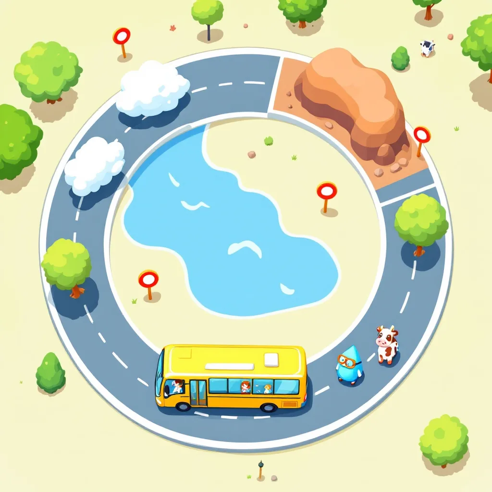
La ruta de bus, parada por parada
| En el bus | En el ciclo | Ejemplo |
|---|---|---|
| Pasajero | La sustancia que viaja | Una molécula de agua o un átomo de nitrógeno |
| Parada | El depósito donde se queda un tiempo | La nube, el río, el suelo o un árbol |
| Trayecto | El proceso que la mueve | Evaporarse, caer como lluvia o ser absorbida por una raíz |
| Vuelta completa | El ciclo | El agua del mar vuelve al mar después de pasar por nube, lluvia y río |
El ciclo del agua
En primer lugar, el ciclo del agua conecta toda la hidrosfera, es decir, los mares, los ríos, el hielo, las nubes y el agua bajo la tierra. Durante el día, el sol calienta el agua y la convierte en vapor; este paso se llama evaporación. Luego, el vapor se enfría en lo alto y forma nubes, lo que se conoce como condensación. Finalmente, el agua cae como lluvia, llamada precipitación, y corre hacia los ríos o se filtra en el suelo.
Sigue el viaje de Gotita.
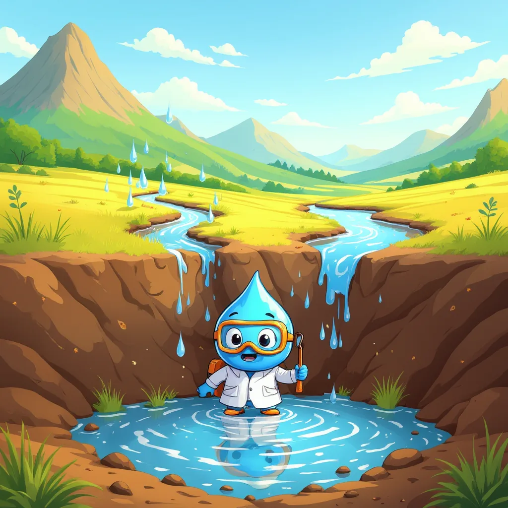
Reto: toca las etapas en el orden en que ocurren.
De hecho, las plantas toman agua por las raíces y luego la sueltan como vapor por sus hojas. Por eso, a este proceso se le llama transpiración, y un bosque grande puede ayudar a formar nubes.
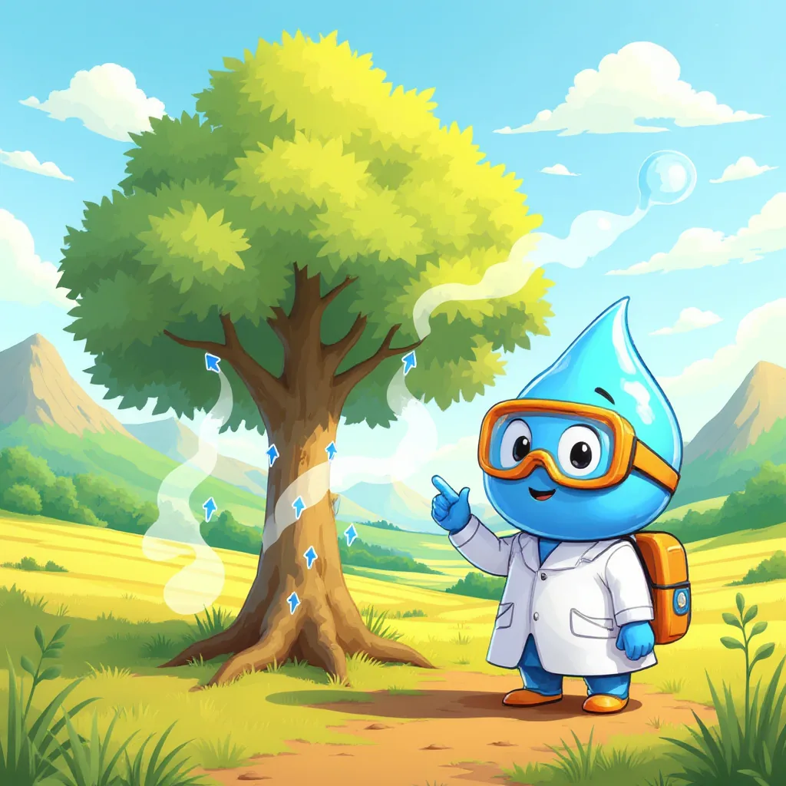
Un árbol grande, como un roble adulto, puede transpirar unos 150 000 litros de agua en un año.
- Agua por día: 150 000 L ÷ 365 días ≈ 411 L.
- En baldes de 20 litros: 411 L ÷ 20 L ≈ 20 baldes cada día.
- Un bosque con 1000 árboles así: 411 L × 1000 = 411 000 L de vapor al día.
Por eso, los bosques funcionan como fábricas de nubes y ayudan a que llueva.
Cuatro viajeros más
Elige un elemento para seguir su ruta.
Por su parte, el nitrógeno es el gas que más abunda en el aire. Por ejemplo, si el aire de un salón se repartiera en diez cajas iguales, casi ocho cajas estarían llenas de nitrógeno y unas dos, de oxígeno. Sin embargo, las plantas no pueden usar ese nitrógeno directamente, igual que una persona no puede comer trigo sin molerlo. Por eso, unas bacterias del suelo y la energía de los rayos lo transforman en sustancias que las raíces sí absorben, como los nitratos.
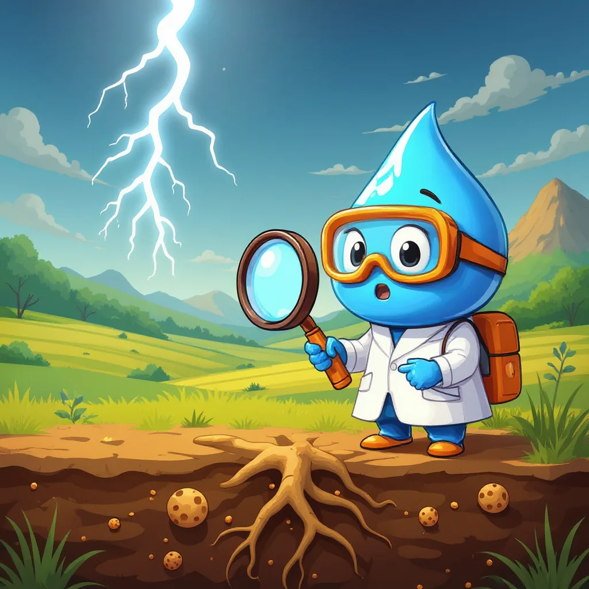
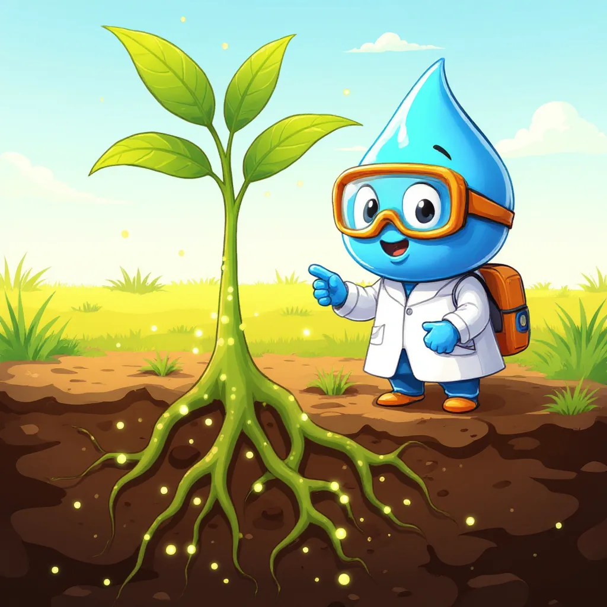
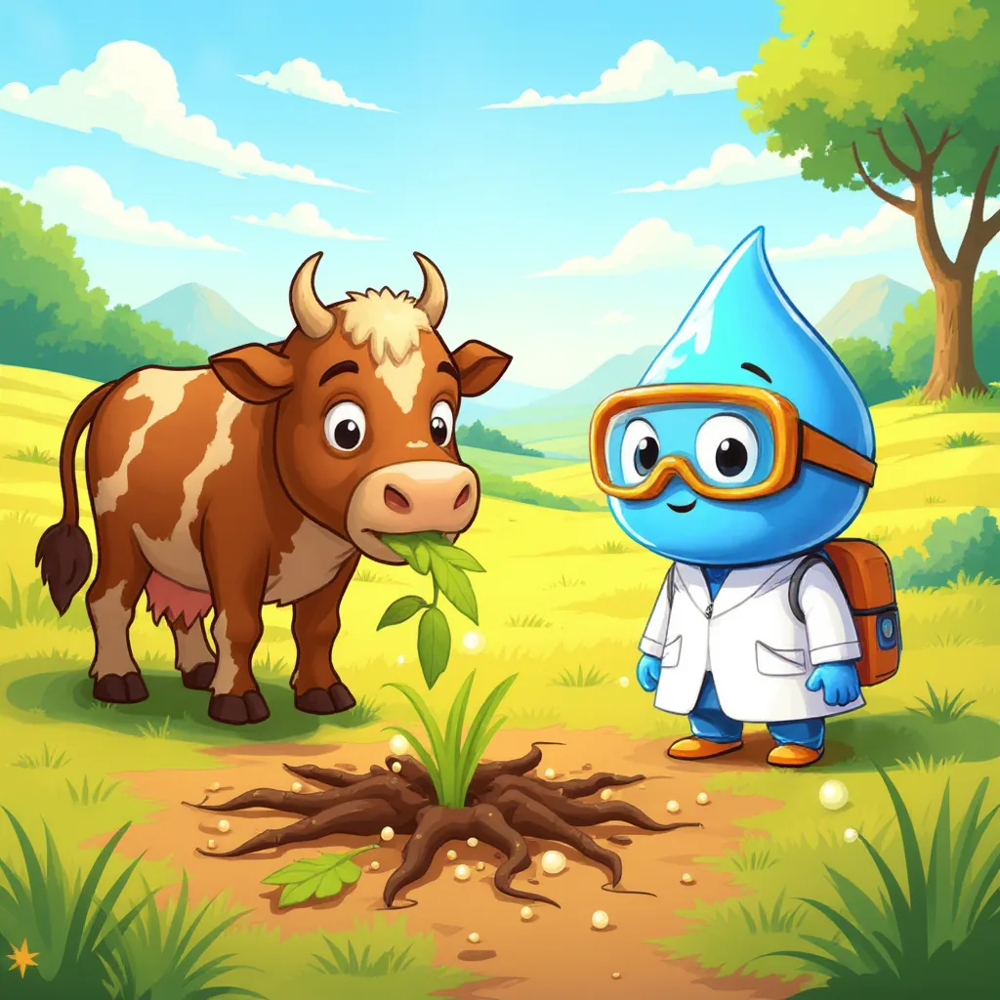
Por ejemplo, cuando la lluvia arrastra abonos a un río, llegan demasiados nitratos y las algas crecen sin control. Por esta razón, en el laboratorio se mide el nitrógeno total del agua.
En el aire, 8 de cada 10 cajas son nitrógeno
El oxígeno ocupa un poco más de 2 cajas (21 %) y el resto es una pizca de otros gases.
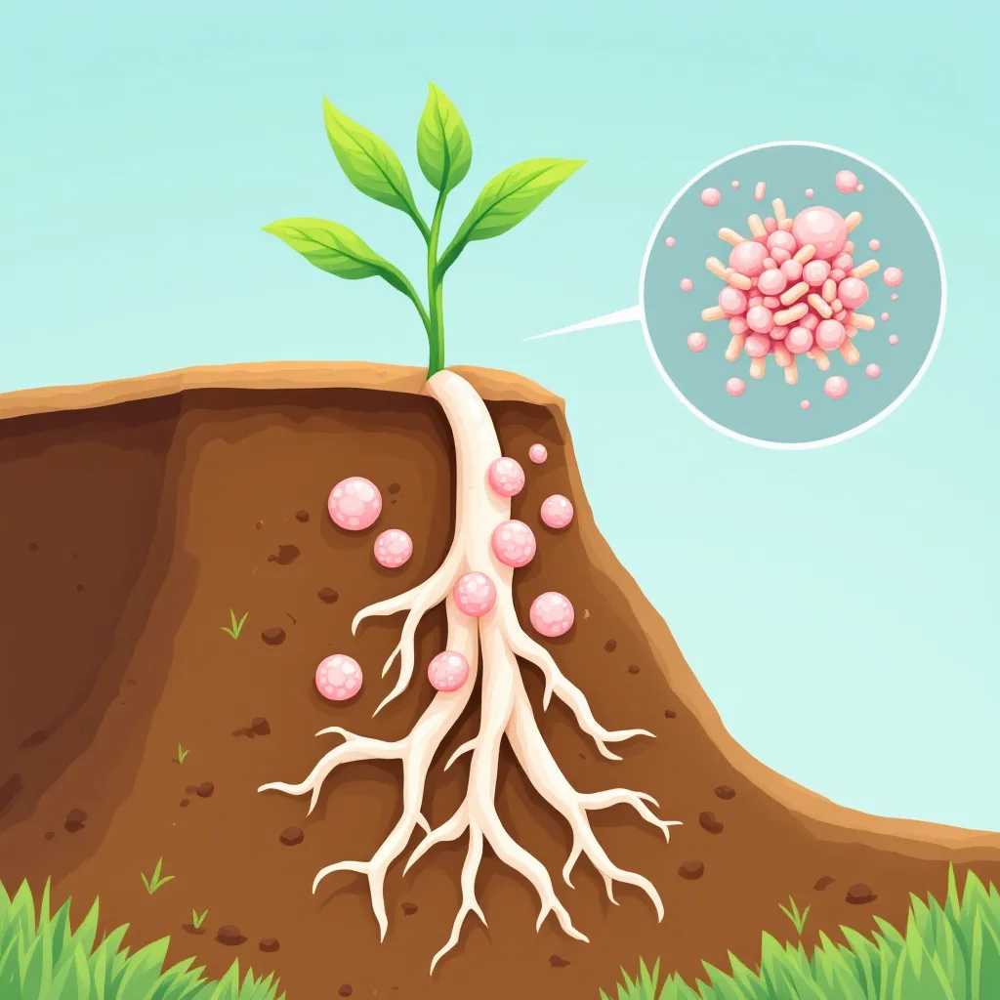
El viaje completo del nitrógeno
- AtraparLas bacterias de los nódulos convierten el nitrógeno del aire en amonio; los rayos lo convierten en óxidos que la lluvia lleva al suelo como nitratos.
- TransformarOtras bacterias del suelo convierten el amonio en nitrato.
- AbsorberEl nitrato se disuelve en el agua del suelo y entra por las raíces.
- ConstruirLa planta lo usa para fabricar proteínas; la vaca las obtiene al comer pasto.
- ReciclarLas bacterias descomponedoras convierten estiércol y restos otra vez en amonio.
- Volver al aireEn suelos encharcados, sin oxígeno, otras bacterias convierten el nitrato en gas nitrógeno, que escapa al aire.
Finalmente, el regreso del nitrógeno al aire ocurre en suelos encharcados, donde casi no hay oxígeno. Allí, unas bacterias llamadas desnitrificantes «respiran» los nitratos en lugar del oxígeno, igual que una persona que usa un tanque de buceo cuando no hay aire. Al hacerlo, liberan gas nitrógeno, que sube en burbujas y vuelve a la atmósfera. Así, el ciclo se cierra y el nitrógeno queda listo para empezar otra vuelta.
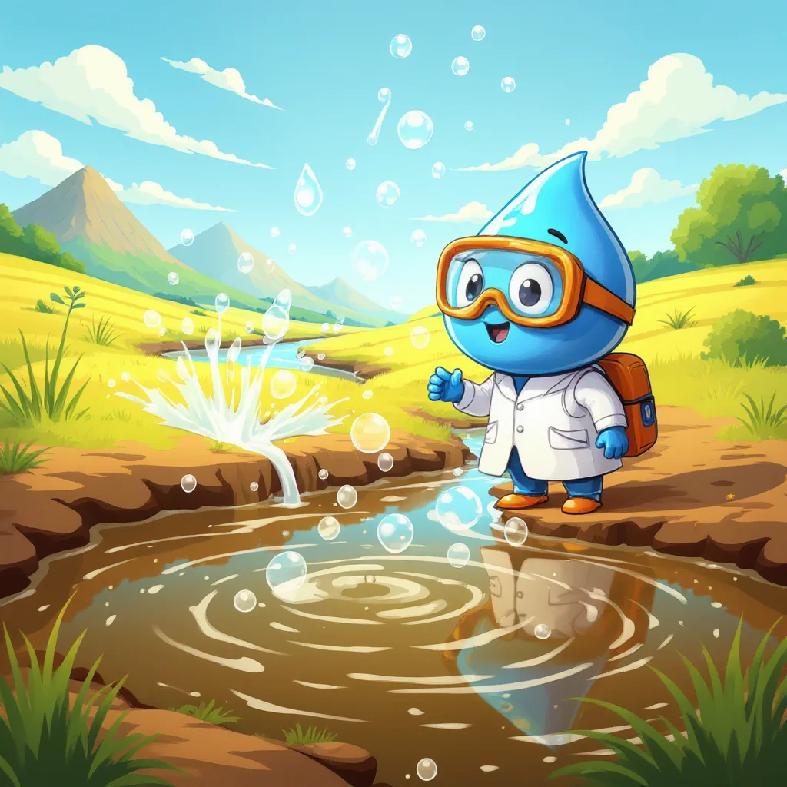
De igual forma, el carbono viaja por el aire como dióxido de carbono, un gas que las personas y los animales expulsan al respirar. Las plantas, en cambio, toman ese gas y, con la luz del sol, fabrican su alimento; este proceso se llama fotosíntesis. Además, el carbono vuelve al aire cuando se queman leña, gasolina o carbón. Por último, los océanos también disuelven parte de ese gas, igual que una gaseosa guarda sus burbujas.
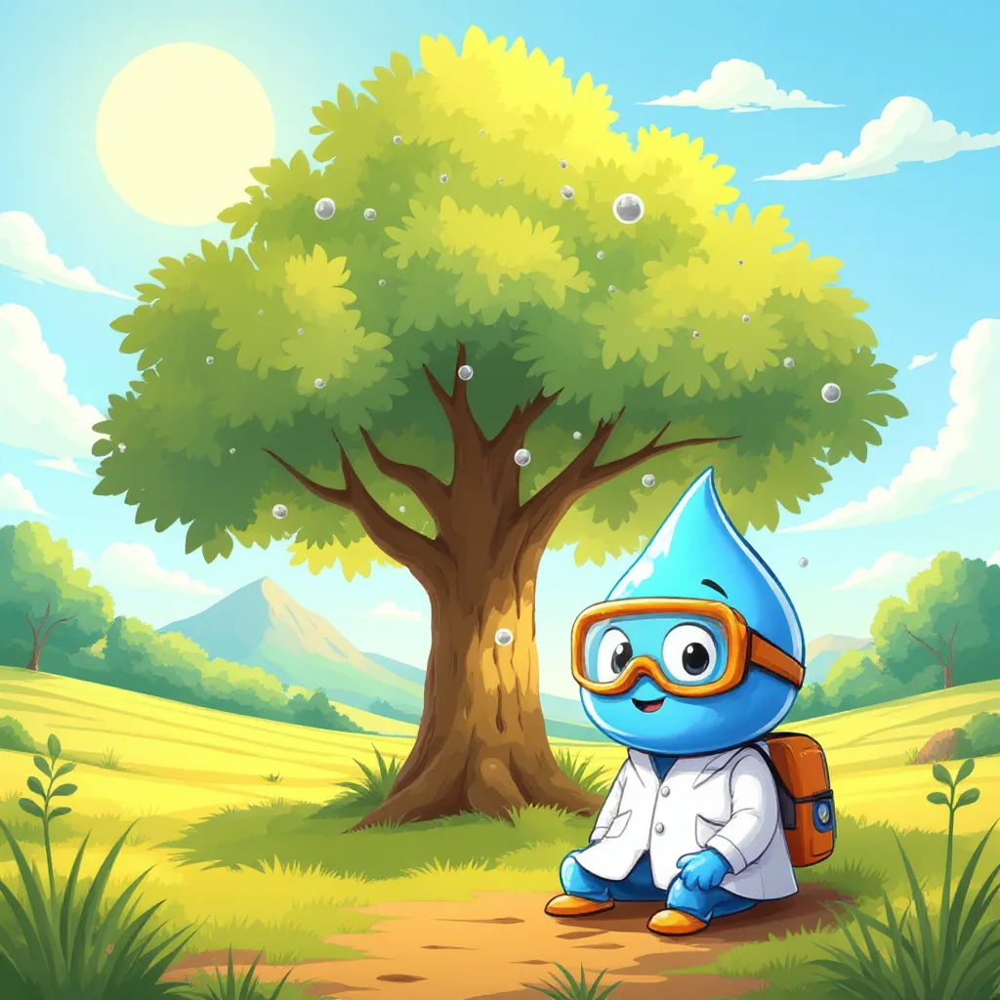
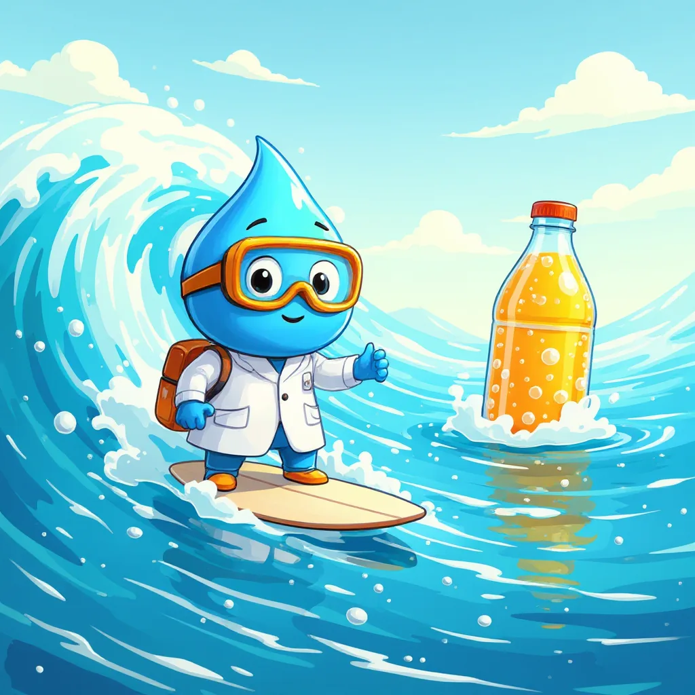
De hecho, el dióxido de carbono disuelto forma un ácido débil que baja un poco el pH del agua. Por eso, este ciclo se relaciona con la acidez y la alcalinidad, que se estudian en la sección de parámetros.
En cambio, al respirar, las personas y los animales hacen la receta al revés: usan azúcar y oxígeno, y liberan dióxido de carbono, agua y la energía para moverse. Así, fotosíntesis y respiración forman un círculo.
La receta de la fotosíntesis
Además, la fotosíntesis funciona como una receta de cocina que ocurre dentro de las hojas. Los ingredientes son dióxido de carbono, que entra por poros diminutos de la hoja, y agua, que sube desde las raíces. Por otra parte, la energía para cocinar la aporta la luz del sol. Así, la planta fabrica azúcar, que es su alimento, y suelta al aire oxígeno, el mismo que respiran las personas.
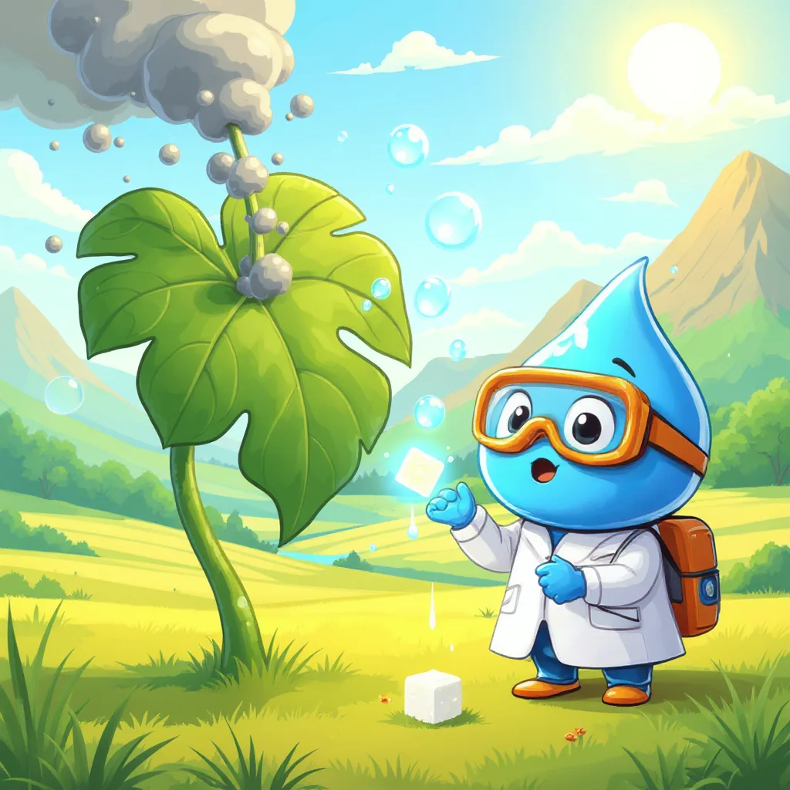
- Dióxido de carbono6 moléculas de CO₂ entran por la hoja.
- + Agua6 moléculas de H₂O suben por la raíz.
- + Luz del solDa la energía para la reacción.
- → Azúcar1 molécula de glucosa, C₆H₁₂O₆.
- + Oxígeno6 moléculas de O₂ salen al aire.
En la fotosíntesis ningún átomo aparece ni desaparece: solo cambian de lugar. Se comprueba contando: 6 CO₂ + 6 H₂O → C₆H₁₂O₆ + 6 O₂.
- Carbono: 6 × 1 = 6 antes y 6 en la glucosa.
- Hidrógeno: 6 × 2 = 12 antes y 12 en la glucosa.
- Oxígeno: 6 × 2 + 6 × 1 = 18 antes y 6 + 6 × 2 = 18 después.
Así, la materia se conserva: es la misma idea de la ruta de bus, donde los pasajeros solo cambian de parada.
A diferencia de los anteriores, el fósforo casi no viaja por el aire, porque se guarda principalmente en las rocas. Con los años, la lluvia desgasta esas rocas y libera fosfatos, que son sales de fósforo. Luego, las plantas los absorben por las raíces y los animales los obtienen al comerlas. Finalmente, los restos llegan a ríos y lagos, se hunden hasta el fondo y, después de miles de años, vuelven a formar rocas. Por eso, es el ciclo más lento.
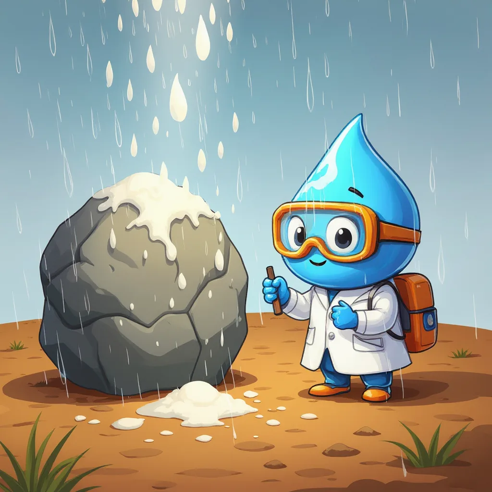
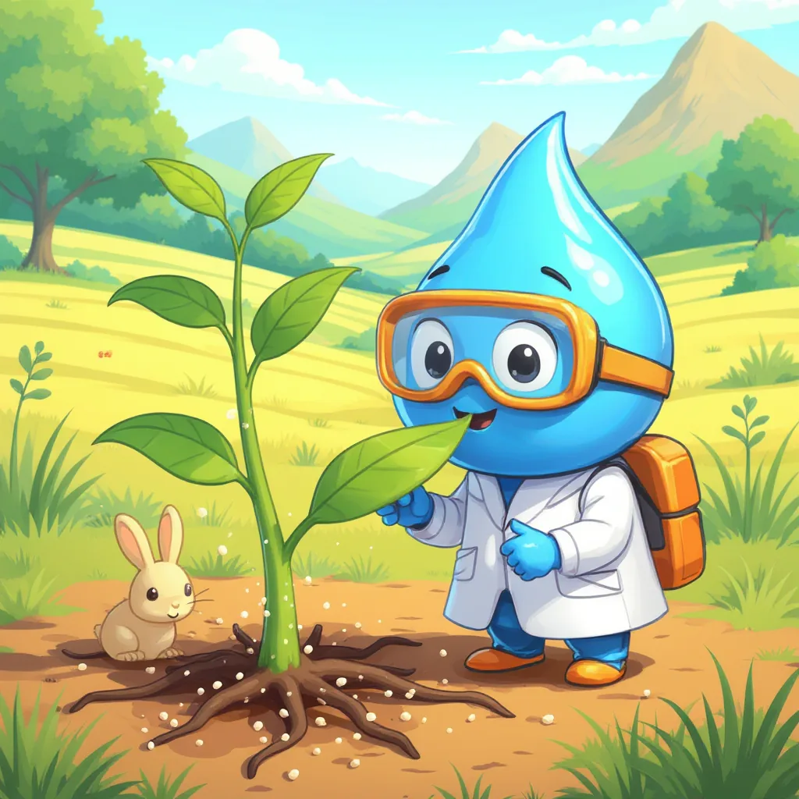
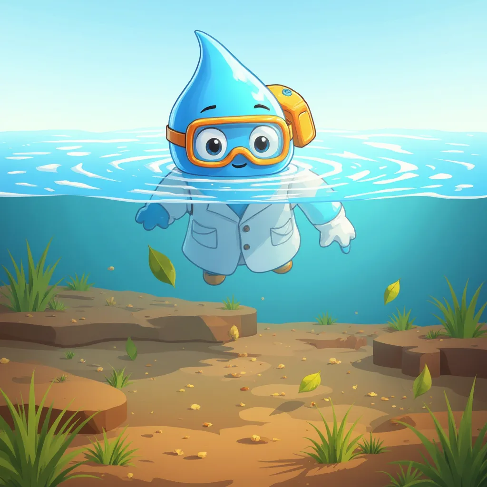
Sin embargo, cuando detergentes y abonos llevan demasiado fósforo a un lago, las algas crecen sin control. Luego, al morir y descomponerse, gastan el oxígeno que necesitan los peces. A este problema se le llama eutrofización.
En agosto de 2014, en la ciudad de Toledo (Estados Unidos), cerca de 400 000 personas pasaron unos tres días sin poder beber el agua de la llave.
La causa fue una enorme mancha de algas en el lago Erie, alimentada por el fósforo de los abonos que la lluvia arrastró desde los cultivos. Algunas de esas algas producen una toxina, llamada microcistina, que llegó hasta la planta de tratamiento.
En Colombia ocurre algo parecido en el embalse del Muña, en Sibaté (Cundinamarca): recibe agua del río Bogotá cargada de aguas residuales, se ha cubierto de buchón de agua, una planta que crece con el exceso de nutrientes, y los vecinos se han quejado por malos olores y zancudos.
Así, el exceso de nutrientes no alimenta mejor a un lago: lo enferma.
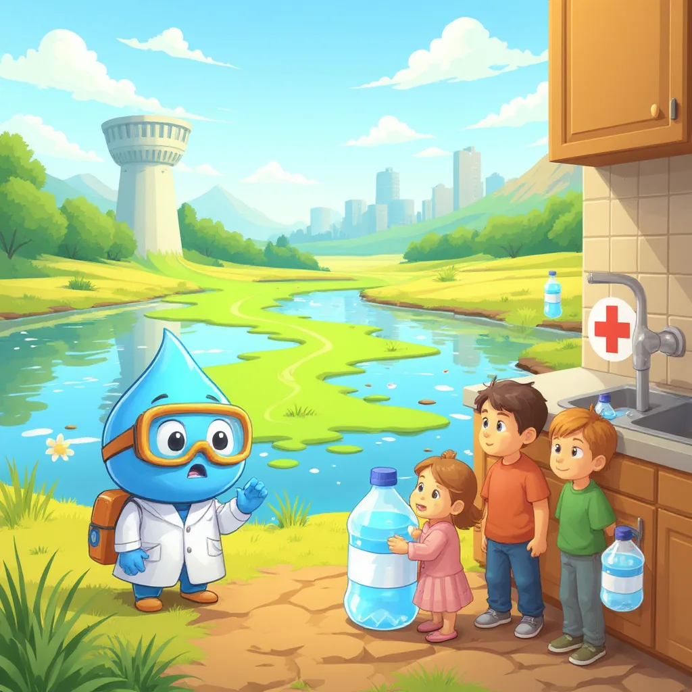
Por último, el azufre se encuentra en las rocas, en el suelo y en los gases que expulsan los volcanes. Además, sale al aire cuando fábricas y carros queman carbón o petróleo. Allí, ese gas se mezcla con el agua de las nubes y forma un ácido, por lo que cae como lluvia ácida. Después, las plantas absorben el azufre del suelo en forma de sulfatos y, cuando se descomponen, lo devuelven al ambiente.
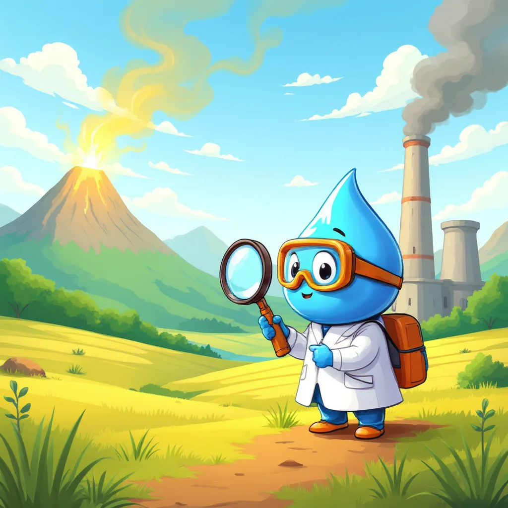
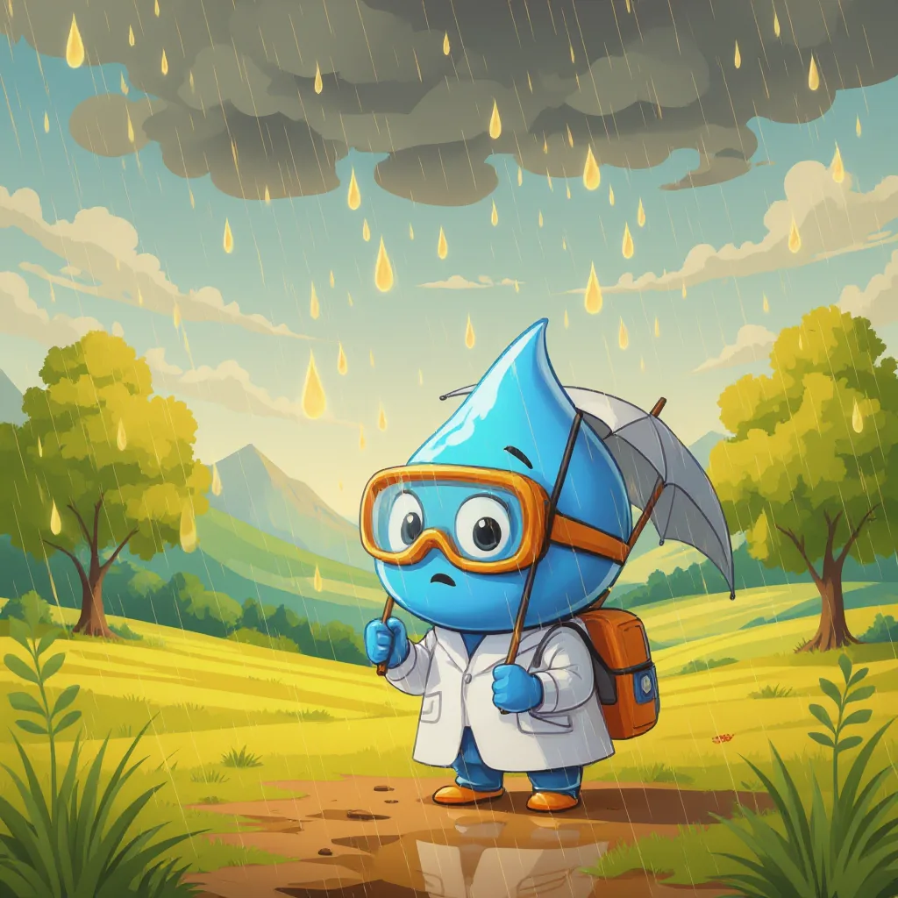
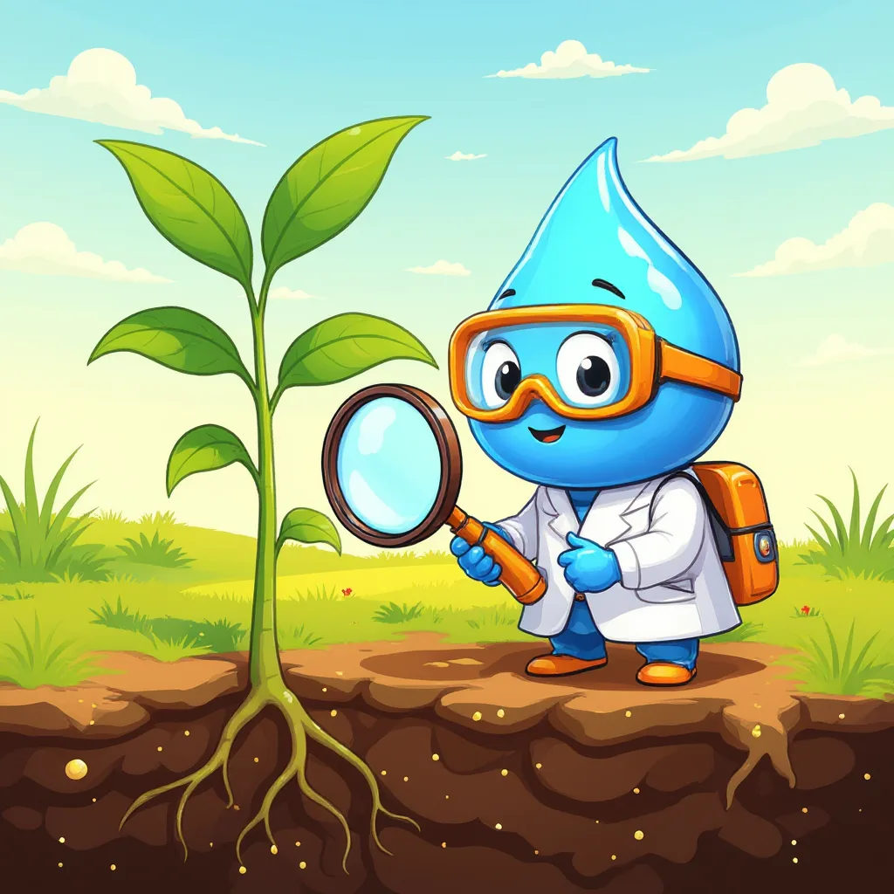
Por ejemplo, en aguas con poco oxígeno, algunas bacterias transforman el azufre en un gas con olor a huevo podrido. Así, ese olor es una pista de que el agua tiene poco oxígeno.
La lluvia normal ya es un poco ácida, con pH cercano a 5,6, porque disuelve dióxido de carbono del aire. Se llama lluvia ácida cuando el pH baja de 5,6.
- Una lluvia con pH 4,6 está un punto por debajo de 5,6.
- Cada punto de pH menos significa diez veces más iones hidrógeno, que son los responsables de la acidez: 10¹ = 10 veces.
- Con pH 3,6 serían dos puntos: 10 × 10 = 100 veces más ácida que la lluvia normal.
Por eso, un cambio que parece pequeño en el número de pH es un cambio grande para los peces y las plantas.
Mini-reto
¿Cuál de estos ciclos casi no pasa por el aire?
Un lago recibe mucho detergente y abono. ¿Qué ocurre?